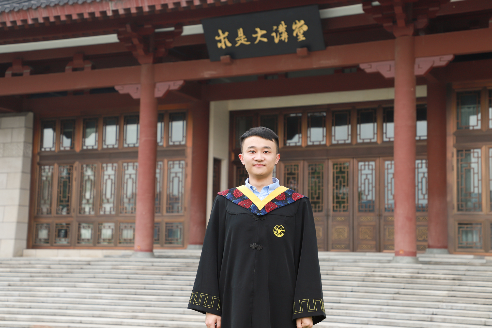

Ke Liu 刘可
Ph.D. Candidate |
 |
Biography
I'm currently a first-year Ph.D student of the College of Computer Science and Technology at Zhejiang University. Before that I got my bachelor's degree from Zhejiang University in july, 2021 majoring in Automation and minoring in Advanced-honor Class of Engineering Education(ACEE), Chu Kochen honors College(CKC). Prior to my undergraduate degree, I interned in Alibaba group as an algorithm engineer for 3 months and got my first paper written. Before I got to Zhejiang University, all my life was spent in my hometown, Chendu, Sichuang province.
Research Interests
My research interests include AI & Science, Graph Neural Network. In particular, I am interested in promoting the development of science especially physical science with artificial intelligence, including discovering the conservation law, the new material. Also I work on improving the AI with physical science.
I am looking forward to working with researchers in the field of AI & Science! Feel free to drop me an e-mail.
News
- [2022.04] One paper was accepted by IJCAI AI for Good.
Conference Papers
- [C1] Ke Liu, Kaifan Yang, Jiahong Zhang, Renjun Xu. , The 31ST International Joint Conference on Artificial Intelligence (IJCAI) , 2022 (to appear).
*Equal contribution
Useful Links